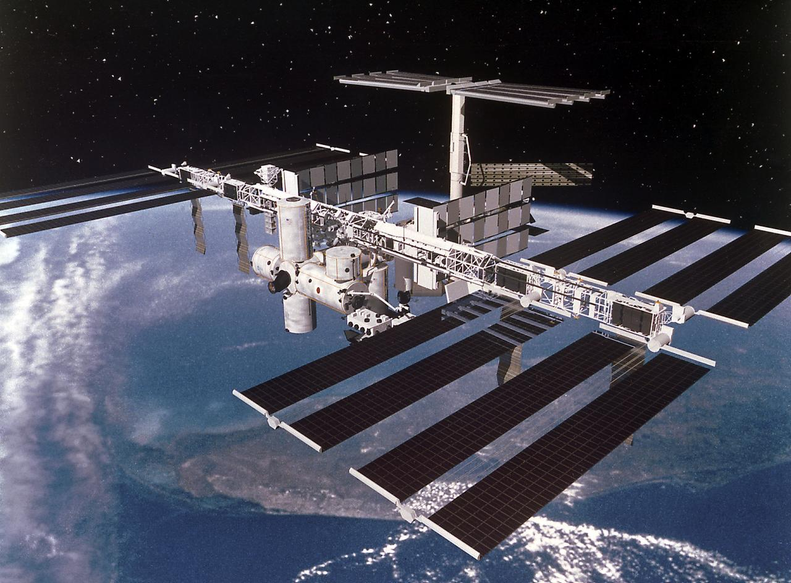
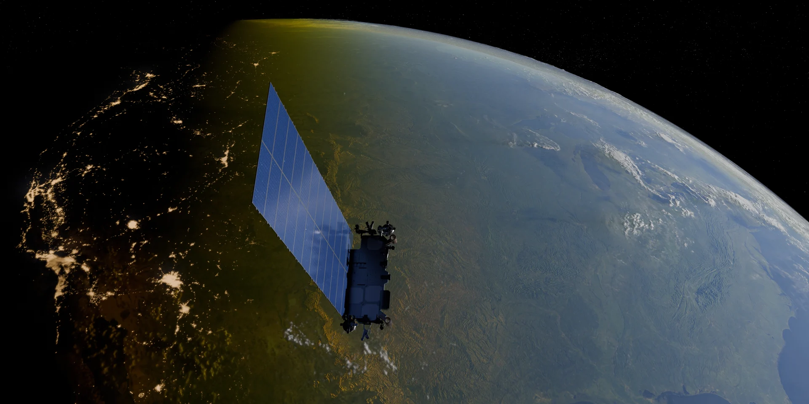
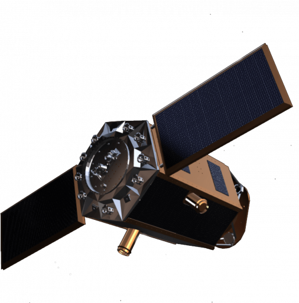

1998 yılında NASA (Amerika Birleşik Devletleri), Roskosmos (Rusya), ESA (Avrupa - 11 ülkeyi temsil eder), JAXA (Japonya) ve CSA (Kanada)
olmak üzere beş ana ortağın iş birliğiyle üretilmeye ve inşa edilmeye başlanmıştır.
Bu istasyon, dünyadaki birçok uzay ajansının ortak hedeflerinin birleştiği küresel bir merkezdir.
Astronotların istasyonda yaptığı deneyler ve gözlemler, hem dünyamızdaki yaşam hem de derin uzay keşiflerimiz için kritik bilimsel veriler sağlar.
Uluslararası Uzay İstasyonu yörüngede 25 yılını geride bırakmış ve bugüne kadar 280'den fazla astronot ve kozmonota ev sahipliği yapmıştır.

Görsel: NASA SpaceX tarafından yönetilen Starlink;
dünya genelinde yüksek hızlı ve düşük gecikmeli internet sağlamak amacıyla
uzaya fırlatılan binlerce küçük uydudan oluşan bir mega takımyıldızı ağıdır.
Uydular Alçak Dünya Yörüngesi'nde (LEO) bulunur.
Geleneksel uydular veriyi uzaydan alıp doğrudan yeryüzündeki bir yer istasyonuna iletmek zorundadır.
Ancak Starlink'in en önemli yenilikçi özelliği, uyduların uzayda birbirleriyle yer istasyonuna bağımlı kalmaksızın
doğrudan lazer ışınları üzerinden veri aktarımı (optik uydular arası bağ) yapabilmesidir.

Görsel: Wikimedia Commonsİmece, Türkiye'nin ilk yüksek çözünürlüklü yerli ve milli yer gözlem uydusudur.
Hizmet verdiği alanlar; yer-gözlem, hedef-teşhis, doğal afet yönetimi, haritalama ve tarım uygulamalarını kapsar.
Hala görevde olan İmece, Mayıs 2025'te Türk hava kuvvetleri komutanlığı tarafından ismi GÖKTÜRK-2B olarak güncellenmiştir.
TUA'nın gelecek projelerine olumlu açıdan büyük etkisi dokunan İmece'nin bu başarılı deneyimine katılacak olan İMECE-2 ve İMECE-3 takım uydu projeleri inşa edilmektedir.

Görsel: TUA